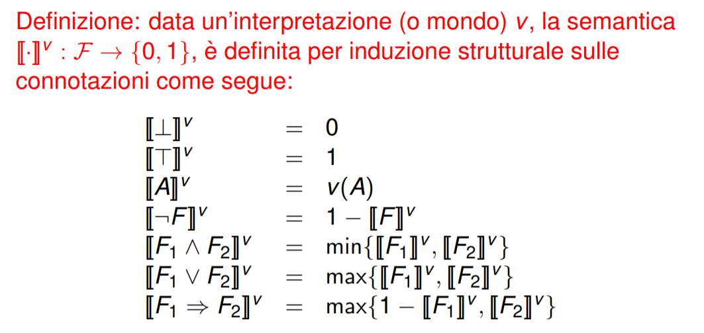
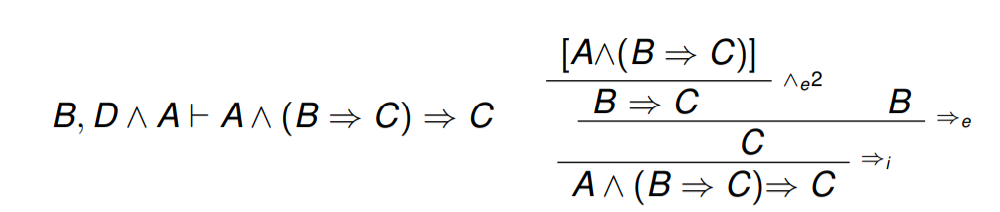

Claudio Sacerdoti Coen
viene studiata da più discipline (fisica, matematica,informatica)
Domande chiave:
la logica non parla di verità (più ragionamenti corretti)
Antinomia: è una conclusione inaccettabile,che deriva da premesse accettabili per mezzo di un ragionamento accettabile
Paradosso : conclusione contraria all’intuizione che deriva da premesse accettabili per mezzo di un ragionamento accettato (è accettabile)
es falso paradosso
Il linguaggio naturale è alla base della comunicazione e del ragionamento umano, e per questo deve essere espressivo e viene esteso e specializzato (per comunicare )
Non possiamo utilizzarlo per procedure di calcolo e dimostrazioni perché:
es
“la vecchia porta la sbarra” può essere interpretata in più volte
“lucia ha perso la testa…” è fortemente dipendente dal contesto
il linguaggio naturale non è adatto per le procedure di calcolo perché può avere più interpretazioni
if la vecciha porta la sbarra then
amputa(gamba,dx)
else
amputa(gamba,dx) es.1
“io mento”
io mento se e solamente se cio che dico non e vero
io mento se e solamente se “io mento” non e vero `
io mento se e solamente se io non mento
es.2
Aggettivo autologico = aggettivo che si applica a se stesso (p.e. polisillabico)
Aggettivo eterologico = aggettivo che non si applica a se stesso (p.e. monosillabico)
“Eterologico e eterologico”
eterologico e eterologico sse non si applica a se stesso **eterologico e eterologico sse eterologico non e eterologico**
i paradossi dei linguaggi naturali esistono perchè:
per evitare i paradossi bisogna impedire l’uso meta-linguistico del linguaggio naturale (per questo si abbandona il linguaggio naturale per uno artificiale)
è che rientrino i paradossi
nel 1900 la matematica viene ristrutturata dalle basi, per farlo ricostruiscono tutta la matematica partendo con la teoria degli insiemi.
la teoria degli insiemi parte dal presupposto che tutto è un insieme
Russel è il primo a trovare un paradosso alla base della teoria degli insiemi.
Essendo che tutto è un insieme si può utilizzare il simbolo di appartenenza tra oggetti.
Paradosso
se x è un insieme che contiene tutti gli insiemi che non contengono se stessi
\(X =\{ Y| Y \notin Y\}\)
\(X \in X \text{ sse } X \notin X\)
per ovviare al paradosso:
nella programmazione ogni linguaggio può eseguire delle funzioni che possono prendere in input e dare in output altre funzioni
supponiamo che le funzioni scrivibili in un linguaggio di prograzione dato un input, restituiscano un output in tempo finito
Sia f(g) = not (g(g))
allora f(f)= not (f(f))
pertanto:
Quindi le funzioni dei linguaggi di programmazione non sono funzioni matematiche
punti informali:
Attenzione:è inconsistente in quando si può avere il paradosso di Russell
Come abbiamo visto il paradosso di Russell crea un inconsistenza logica nella teoria naif.
Per questo serve una teoria che rimuova l’assioma di comprensione(per ogni proprietà P si può creare un insieme \(\{x | P(x)\}\)), e che controlli l’uso meta-linguistico
Attenzione: quando si usano insiemi rappresentanti altri insiemi, non si possono utilizzare i diagrammi di venn
In una teoria assiomatica degli insiemi:
Due insiemi sono uguali sse hanno gli stessi elementi.
\(\forall X ,\forall Y ,(X = Y \iff \forall Z \text{ }(Z \in X \iff Z\in Y ))\)
per ogni insieme X e Y, X e Y sono uguali se e solo se per ogni Z appartiene a X e se e solo se Z appartiene a Y
X è sottoinsieme di Y se Y possiede tutti gli elementi di X
\(X \subseteq Y =^{def}= \forall Z, (X \in X \implies Z \in Y)\)
definisco che X è sottoinsieme di Y quando per ogni Z , Z appartiene a X implica che Z appartiene a Y
Dato un insieme, possiamo formare il sottoinsieme dei suoi elementi che soddisfano una proprietà
\(\forall X ,\exists Y ,\forall Z ,(Z \in Y \iff Z \in X \wedge P (Z ))\)
per ogni X esiste un Y, tutti gli insiemi in Z sono elementi di Y se sono appartenenti a X e hanno la proprietà
Abuso di notazione: \(X =\{Y \in U| Y \notin Y\}\)
Attenzione: per descrivere Y c’è un abuso di notazione \(\{Z \in X |P(Z)\}\) (Z è un elemento)
L’insieme X viene indicato come \(\emptyset\)
\(\exists X ,\forall Z ,Z \notin X\)
L’assioma è ridondante. Sia Y un qualunque altro insieme di cui un assoma asserisce l’esistenza (vedi p.e. assioma dell’infinito)
\(\emptyset {:=} \{X \in Y |false\}\)
\(A \cap B {:=} \forall Z\{Z\in A |Z\in B\}\)
teorema
\(X \in A \cap B \iff X \in A \wedge X \in B\)
metto tutti gli insiemi da intersecare in F.
\(\bigcap F {:=} \{ X \in A | \forall Y (Y \in F \implies X/Right \in Y) \}, A \in F\)
\(\forall A,\forall B,\exists X ,\forall Z ,(Z \in X \iff Z \in A \vee Z \in B)\)
\(\forall F \exists X \forall Z (Z\in X \iff \exists Y (Y \in F \wedge Z \in Y))\)
\(\forall X, \exists Y \forall Z (Z \in Y \iff Z = X)\)
l’insieme Y viene indicato come {X}
grazie a questo insieme possiamo creare un infinità di insiemi, possiamo creare infiniti insiemi partendo da \(\emptyset\) divente \(\{\emptyset\}\) e combinato con l’unione si possono unire questi insiemi
(Abuso di) notazione Con la notazione \(\{A_1, . . . , A_n\}\) indicheremo l’insieme \(\{A_1\} \cup . . . \cup \{A_n\}\) che esiste in virtu degli assiomi del singoletto è dell’unione.
\(X \in \{A_1,...,A_n\}\) sse \(X=A_1\) oppure … oppure \(X=A_n\) .
Esiste un insieme che contiene almeno tutti (gli encoding de)i numeri naturali.
\(\exists Y( \emptyset \in Y \wedge \forall N (N \in Y \implies N \cup \{N\} \in Y))\)
Indichiamo temporaneamente con N tale insieme
combinaimo altri assiomi con quello dell’infinito si arriva a dimostrare l’esistenza dell’insmieme N che contiene tutti e soli i numeri naturali.
Esiste l’insieme dei sottoinsiemi di un inseme dato.
\(\forall \exists Y, \forall Z ( Z \in Y \iff Z \subseteq X\)
per ogni insieme X esiste un Y tale per cui, ogni Z elemento di Y se e solo se Z è un sottoinsieme di X
abuso di notazioni:\(2^x\) oppure \(P(x)\)
es
\(2^{\{1,2\}}= \{\emptyset, \{1\},\{2\},\{1,2\}\}\)
Ogni insieme non vuoto ha un elemento dal quale e disgiunto (senza elementi in comune ).Fra le conseguenze: nessun insieme contiene (ricorsivamente) se stesso e ha quindi senso cercare di misurare la taglia (chiamata cardinalita) di un insieme.
\(A=\{\emptyset , \{ \emptyset\}\}\)
\(\emptyset \in A\) \(\emptyset \cup A = \emptyset\)
a e l’insime vouto soon disgiunti
Intuitivamente: l’immagine di un insieme rispetto a una formula che descrive una funzione e ancora un insieme. Intuitivamente: se A e un insieme, quindi e abbastanza piccolo, e a ogni elemento ne associo un altro, in una relazione molti-a-uno, quello che ottengo come immagine e ancora piccolo.
Assumo di avere i numeri reali con la mia meta matematica e li codifico con i miei insiemi
\(\llbracket 0 \rrbracket {:=} \emptyset\)
\(\llbracket n+1 \rrbracket {:=} \llbracket n \rrbracket \cup \{\llbracket n \rrbracket \}\)
esempi \(\llbracket 0 \rrbracket =\emptyset\) \(\llbracket 1 \rrbracket =\{\emptyset\}\) \(\llbracket 2 \rrbracket =\{\emptyset,\{\emptyset\}\}\) \(\llbracket 3 \rrbracket =\{\emptyset,\{\emptyset\}\,\{\emptyset,\{\emptyset\}\}\}\)
Teorema: E’ una proposizione con la quale si vuole affermare che un enunciato sia vero. Solitamente si presenta nella forma A,B,C,D… -> T, dove A,B,C,D sono le ipotesi e T la tesi.
regole di introduzione: sono quelle da utilizzare se voglio lavorare sulla conclusione, servono per introdurre una dimostrazione
regole di eliminazione: servono per lavorare sull’ipotesi, la utilizziamo quando noi sappiamo già qualcosa
postulato(o assioma):sono delle ipotesi che diamo per vere
assioma: è un ipotesi che diamo per vera da quel momento in avanti
enunciato di un teorema e ci o che vogliamo dimostrare. Si compone di un insieme di ipotesi e di una conclusione
ogni passaggio va a lavorare su:
introduzione:Per dimostrare \(\forall x P(x)\) (per ogni x vale P(x))
“sia x (un insieme) fissato; . . .”
(i “. . .” sono una prova di P(x))
eliminazione:Per ogni ipotesi o risultato intermedio \(\forall x P(x)\) potete concludere che P valga ciò che volete
introduzione: Per dimostrare \(P \implies Q\)
“Assumo P (H). . . .” (“H”) e il nome dell’ipotesi; ` i “. . .” sono una prova di Q)
eliminazione: Da un’ipotesi o un risultato intermedio \(P \implies Q\) e da un’ipotesi o un risultato intermedio P potete concludere che Q vale.
eliminazione (variante): Da un’ipotesi o un risultato intermedio \(P \implies Q\) di nome H , se volete concludere Q, potete procedere dicendo “per H , per dimostrare Q mi posso ridurre a dimostrare P”
introduzione: Per dimostrare \(P \iff Q\) allora devo dimostrare \(P \implies Q\) e \(Q \implies Q\)
eliminazione:L’ipotesi \(P \iff Q\) può essere usata sia come ipotesi \(P \implies Q\) che come \(Q \implies P\)
P ovvero Q: serve per espandere P ottenendo la frase Q
Se attraverso le altre ipotesi rendono P falso, \(P \implies assurdo\)
introduzione: per dimostrare \(P \wedge Q\): P e Q , si dimostrano sia P che Q
eliminazione:per eliminazione, può essere usato sia P che Q. in alternativa invece di concludere o assumere \(P \wedge Q\) si può direttamente concludere o assumere \(P (H_1)\) e \(Q (H_2)\).
introduzione: per dimostrare \(P \vee Q\) basta dimostrare P oppure Q dichiarandolo
> “dimostro P” oppure “dimostro Q”
eliminazione:Data un’ipotesi o un risultato intermedio \(P \vee Q\), si può proseguire nella dimostrazione per casi, una volta assumendo che P valga e una volta che Q valga: > “procedo per casi:
> caso in cui valga P (H ): . . .
> caso in cui valga Q (H ): . . .”
Potete anche utilizzare una regola di introduzione per dimostrare un nuovo risultato intermedio, diverso dalla conclusione corrente, a cui date un nome per utilizzarlo in seguito, a patto che abbiate già a disposizione le premesse della regola
introduzione: Per dimostrare \(\exists x.P(x)\) (esiste un x per cui vale P(x)): > “scelgo E e dimostro P(E) ; . . .”
(i “. . .” è una prova di P(E)) E puo essere un’ ` espressione qualsiasi (es. B \(\cap\) C).
eliminazione: Da un’ipotesi o un risultato intermedio \(\exists x.P(x)\) potete procedere nella prova dicendo > “sia x t.c. P(x) (H)” x deve essere una variabile non in uso in nessuna ipotesi o nella conclusione
per ogni tale che: > “sia x tale che P(x). . . .” > abbrevia > “sia x (un insieme) fissato; assumo P(x); . . .” > per dimostrare \(∀x P(x) \implies Q(x)\)
Da \(H_1, . . . , H_n\):
Quindi:
negli insiemi l’ordine non conta e nemmeno la numerosità degli elementi
coppie ordinate: Una coppia ordinata, invece, e formata da due componenti di cui uno e identificato come primo e l’altro come secondo. Due coppie sono uguali sse lo sono rispettivamente il primo e il secondo elemento
Una coppia non è l’insieme dei suoi elementi e non deve essere pensata come contenete i suoi elementi Una coppia ordinata \(\langle 1,2 \rangle\) si può rappresentare come un insieme scrivendo \(\{X,\{X,Y\}\}\)
\(\langle X,Y \rangle = \langle X^1 Y^1 \rangle \iff X= X^1 \wedge Y=Y^1\)
crollario:\(\langle X, Y\rangle \neq \langle Y, X \rangle \text{a meno che} X=Y\)
a partire da due insiemi A e B possiamo creare il prodotto cartesiano che viene indicato con l’abuso di notazione AxB.
\(\forall A \forall B, \exists C,\forall Z,(Z\in C \iff \exists a,\exists b, ( a \in A \wedge b \in B \wedge Z=\langle a,b \rangle))\)
es: \(\{a,b\} \times \{1,2\}= \{\langle a,1\rangle,\langle a,2\rangle,\langle b,1 \rangle,\langle b,2\rangle\}\)
Una relazione fra A e B è un qualunque sottoinsieme di \(A \times B\).
Elementi in relazione
Sia \(\mathit{R}\) una relazione. Scriviamo \(a\mathit{R}b \text{ sse } \langle a,b\rangle \in \mathit{R}\)
Se \(\mathit{R} \subset A \times \emptyset\) oppure \(\mathit{R} \subset \emptyset \times A\) allora \(\mathit{R}\)
Dimostrazione: non posso formare coppie prendo uno dei due elementi dall’insieme vuoti, perché tale insieme è vuoto.
esempio
la relazione \(\le\) sull’insieme numerico \(\{0,1,2\}\) è definita come segue:
\(\le {:=} \{\langle 0,0 \rangle ,\langle 0,1 \rangle ,\langle 0,2 \rangle ,\langle 1,1 \rangle ,\langle 1,2 \rangle,\langle 2,2 \rangle \}\) e \(0\le 2\) è una notazione per \(\langle 0,2\rangle \in \le\)
Una funzione di dominio A e codominio B e una qualunque relazione \(f \subset A \times B\) tale che: \(\forall X,(X \in A \implies \exists! Y , X f Y)\)
per ogni elemento del dominio c’è un unico elemento del codominio
Abuso di notazione
Sia f una funzione. Scriviamo \(y=f(x)\) per dire \(xfy\),ovvero \(\langle x,y \rangle \in f\)
\(\forall A, \forall B,\exists C,\forall f,(f \in C \iff f \text{ è una funzione di dominio A e codominio B})\)
Abuso di notazione \(B^{A}\) (spazionio delle funzioni da A a B)
es
\(\{1,2\}^{\{a,b\}} = \{\{\langle a,1\rangle,\langle b,1\rangle \},\{\langle a,1\rangle,\langle b,2\rangle \},\{\langle a,2\rangle,\langle b,1\rangle \},\{\langle a,2\rangle,\langle b,2\rangle \}\)
Spazio di funzioni verso insiemi vuoti
\(B^{\emptyset}=\emptyset\)
\(\emptyset^A=\emptyset se A\neq \emptyset\)
\(f \in B^{A}\)
Sia $ A A $.La relazione \(\mathit{R}\) gode della proprietà
es:
TODO: aggiungere gli es
Una relazione \(\mathit{R} \subset A * A\) è di ordine stretto sse \(\mathit{R}\) è trenaisitva e non riflessiva
Una relazione \(\mathit{R} \subset A \times A\) è di ordine lasco sse \(\mathit{R}\) è trenaisitva e riflessiva
Una relazione \(\mathit{R} \subset A \times A\) è equivalente sse \(\mathit{R}\) è riflessiva, transitiva e simmetrica
l’equivalenza è diversa dall’uguaglianza perché nell’uguaglianza viene usata per confrontare oggetti meno di dettagli non ritenuti rilevanti per quello che si deve fare
TODO: add
sia \(\equiv \subseteq A*A\) una relazione di equivalensa.L’insieme quoziente di A ripetto a \(\equiv\) è definito come: \(A_{/\equiv}{:=} \{[x]_{\equiv} | x \in A\}\)
Q=\(\mathbb{Z}\times \mathbb{Z}^0\) dove \(\mathbb{Z}^0=\mathbb{Z}\/{0}\)
Costruisco una relazione di equivalenza tra le coppie in Z come: \(\langle a_1,b_1\rangle \equiv \langle a_2,b_2 \rangle \coloneq a_1\times b_2 =b_1 \times a_2\)
$ \(Q_{\/\equiv} = \{...,[\langle 2,3\rangle],...,[\langle 4,2\rangle],...\}\)
la classe di equivalenza \([\langle 2,3\rangle]={\langle 2,3\rangle,\langle 4,6\rangle,...}\)
Avere la stessa cardinalità Due insiemi A, B hanno la stessa cardinalità sse esiste una biiezione fra A e B. Avere la stessa cardinalita è una “relazione di equivalenza”, ma ` sulla classe di tutti gli insiemi.
Si possono costruire i numeri cardinali senza utilizzare le classi di equivalenza, ma lavorando solo con gli insiemi. quindi ogni numero cardinale viene ottenuto come un insime.
Un insieme si dice finito quando non è infinito.
osservazione del finito
Infinito con l Metafora dell’albego di Hilbert
Immaginate un albergo con una stanza singola per ogni numero naturale, tutte occupate. Arriva un nuovo cliente. Puo l’albergatore con una qualche manovra accomodare tutti i clienti nell’hotel rispettando il fatto che una singola puo essere occupata da un solo ` cliente?
Un insieme A si dice infinito quando è in biderezione con un suo sottoinsieme proprio \(B\) i.e \(B \subsetneq \text{ e } |A|=|B|\)
TODO: add birezione
TODO: aggiungere
ci serve per definire il linguaggio artificiale
BNF è una notazione per descrivere le grammatiche; non tutti i linguaggi sono descrivibili tramite BNF .
Una BNF è una quadrupla (T,NT,X,P):
Di solito di una BNF si indicano solamente le produzioni P:
esempio
Un BNF si definisce: La stringa \(\omega\) di soli terminali appartiene al linguaggio sse ottengo \(\omega\) a partire da X rimpiazzando ripetutamente ciascun non terminale con una delle stringhe alternative a lui associate in una produzione.
Una grammatica è ambigua se si mostra che due modi diversi che una parola w appartiene al linguaggio.
Esempio:
\(F ::= x | y| F+F | F\times F\)
\(x + y\times x\) la posso ottenere in due modi diversiper non rendere le nostre grammatiche non ambigue, usiamo delle estenzioni nell BNF:
Consideriamo una BNF non ambigua.
Una stringa appartiene al linguaggio della BNF se è generata in modo unico.
Ovvero a ogni stringa del linguaggio resta naturale associa una struttura ricordiva.
L’AST ha un nodo per ogni espansione di simbolo. La radice corrisponde al simbolo iniziale e le foglie alle espansioni fatte con solo simboli terminali. I nodi figli di un nodo corrispondono ai non terminali contenuti nell’espansione del nodo padre
Sintassi della definizini di funzini unarie: \(f(w_1)=....corpo_1...\)
\(...\)
\(f(w_n)=....corpo_n...\)
La funzione g(w) può essere:
Sia \(p\) una strina di terminali e \(\omega\) una stringa di terminali e non terminali (variabili).
TODO:finisci slide 18/19
es
es
Se non ci restringessimo alla ricorsione strutturale (vedi dopo), qualunque programma esprimibile in un qualunque linguaggio di programmazione sarebbe esprimibile in questo pseudo-codice!
Le BNF imprimono alle stringhe una struttura ricorsiva; In una struttura ricorsiva, un elemento o è atomico, o è composto a partire da parti più piccole con la stessa struttura; quindi:
Una funzione \(f(\omega)\) dove \(\omega\) è una stringa (formula) è definita per ricorsione strutturale sse:
Sia P una proprietà che vogliamo dimostrare valere su tutte le stringhe \(\omega\) di linguaggio generato da una BFN. La dimostraizone può essere data in questo modo:
Matematica: l’operazine \(+\) è una funzione, qundi un sottonsineme del prodotto cartesiano.(es \(+ =\{\langle \langle 0 ,0\rangle\,0 \rangle, \langle \langle 3, 7 \rangle, 10\rangle ...\}\))
Informatica viene definita come una procedura di calcolo, partendo dai i numeri in base uno N = O | S R, possiamo definiral in 4 modi.
O `+ m =m
S n `+ m =S (n `+ m)
-- possiamo scriverla con la ricorsione sul secondo membro
n +' O =n
n +' S n =S (n +' m)
-- un altro modo è tenere un accomulatore
O ``+ m=m
S n ``+ m = n ``+ S m
-- l'opposto dell'ultima
n +`` O = n
n +`` S n = S n ``+ mEssendo che in matematica tutte le funzioni di somma sono uguali, ci chiediamo se anche queste lo siano. Lo risultato è lo stesso ma calcola in modo diverso quindi non sono la stessa funzione.
Per esmpio
-- 1000 + 2 -> 1002
-- utilizzando la prima funzione abbiamo
-- 1000 `+ 2 -> S(999`+2)-> S(S(998`+2)) -> .... -> S(S( .... `+ 2)) ->1002
-- utilizzando la seconda invece
-- 1000 +` 2 -> S(1000+'1)-> S(S(998+`0)) ->1002queste funzioni differiescono su quale input calcolano e ne deriva che hanno un tempo d’esecuzione diverso.
-- utilizzando la terza
-- 1000 ``+ 2 -> 999 ``+ S 2 -> 998 ``+ S (S 2) -> ... -> 0 ``+ 1002 -> 1002Lo Stack è quello dove vengono allocate le variabili locali e le chiamate di funzione, mentre la Heap alloca tutti i dati di lunghezza dinamnica.
la prima funzione utilizza le cella dello stack mentre la seconda della heap.
Queste funzioni sono uguali, e sono uguali a quella matematica?
Per definzione bisogna avere il dominio e il codominio uguale con la stessa legge d’associzione.
lemma1 : m = O +’ m
procedo su induzione strutturale su m per dimostrare m = O +’ m
caso O: devo dimostare che O = O +’ O ovvero O= O ovvio
caso S x: per ipotesi induttiva \(\forall x\) x = O +’ x (H) devo dimostrare che \(\forall x\) S x = O +’ S x ovvero \(\forall x\) S x = S (O +’ x ) ovvio per H
lemma2 : S (x +’ m) = S x +’ m
procedendo su induzione strutturale su m per dimostrare S( x +’ m )= S x +’m
caso O: debbo dimostrare \(\forall x\) S(x +’ O)= S x +’ O ovvero \(\forall x\) S (x )= Sx ovvio
Caso S y: per induzione abbiamo che \(\forall x\) S (x +’ y ) = S x +’ y (H) dobbiamo dimostrare \(\forall x\) S (x +’ (S y))= S x +’ S y ovvero \(\forall x\) S (S (x +’ y))= S x +’ S y ovvero \(\forall x\) S( S (x +’ y))= S(S x +’ y) sias x un numero naturale ovvio per H
Dim1: n ‘+ m = n +’ m
Procediamo per ricorsione strutturale su n per dimostrare \(\forall\) m. n ‘+m = n +’ m
Caso 0: dimostro \(\forall m.\) O ‘+m= O +` m ovvero \(\forall\) m= 0 +’ m ovvio per lemma1
Caso S x: per induzione strutturale \(\forall\) m x ‘+ m = x +’ m (H) devo dimostrarem \(\forall\) m S x ‘+ m = S x +’ m ovvero \(\forall\)m S (x ‘+ m)= S x +’ m siam m un numero per ipotesi H possiamo riscrivere S ( x +’ m) = S x +’ m ovvio per lemma2
nth n l ( restutiusce l’n-esimo elemento di l se l è sufficentemente lunga)
la definisco per ricorsione strutturale su n:
head []=6699 --possiamo far restituire qualsiasi cosa head (n:l)=n
tail []=6699 -- possiamo fare restituire qualsiasi cosa tail (n:l)=l
nth O l = head l nth (S n) l = nth n (tail l)
nth 0 [] = 6699 nth (S n) [] = 6699 nth 0 (n:l) = n nth (S n) (n:l) = nth n l
therorema: (\(\forall\) n. n < |l1| \(\implies\) nth n l1 = nth n ( l1@ l2)) \(\vee\) (\(\forall\)n. n < |l2" \(\implies\) nth n l2 = nth (|l1|+n) (l1@l2) )
case []: \(\forall\)l2. (\(\forall\) n. n < |[]| \(\implies\) nth n [] = nth n ( []@ l2)) \(\vee\) (\(\forall\)n. n < |l2" \(\implies\) nth n l2 = nth (|[]|+n) ([]@l2) ) ovvero
\(\forall\)l2. (\(\forall\) n. n < 0 \(\implies\) nth n [] = nth n ( []@ l2)) \(\vee\) (\(\forall\)n. n < |l2" \(\implies\) nth n l2 = nth (n) (l2) ) dimostro \(\forall\) n < 0 \(\implies\) … sia n un numero t.c n < 0 assurdo. dimostr \(\forall\)n . n < |l2| \(\implies\) nth n l2 = nth n l2 ovvio
caso x:l : \(\forall\) (\(\forall\) n. n < |l1| \(\implies\) nth n l1 = nth n ( l1@ l2)) \(\vee\) (\(\forall\)n. n < |l2" \(\implies\) nth n l2 = nth (|l1|+n) (l1@l2) ) # Verità e Conseguenza Logica
Verità fisiche, chimiche… sono associate al mondo sensibile, e sono definite da esperimenti ripetibili
Cosa resta della verità quando manca il mondo sensibile?(matematica,informatica)
In una teoria matematica:
Conseguenza Logica: se una preposizione assume lo stesso valore di verità in tutti i mondi modelli della teoria
Sia \(\Gamma\) un insieme di sentenze (costituiscono dei vincoli che i mondi devono rispettare) e F una preposizione.
F è consegnuenza logica di \(\Gamma (\Gamma \Vdash F)\) quando F è vera in tutti i modelli di \(\Gamma\) ovvero tutti i modni in cui ogniuna delle \(G \in \Gamma\) è vera
Siano F e G due sentenze, F è logicamente equivalente a \(G (F \equiv G)\) sse \(F \Vdash G \mbox{ e } G \Vdash F\)
Una teoroia è inconsistenze quando non ammette modelli, ovvero nessun mondo tutti gli assomi sono contemporanemanete veri.
se \(\Gamma\) è inconsistente allora \(\forall F\) si ha \(\Gamma \Vdash F\).
Se \(\Gamma\) è inconsisntente vale anche l’assurdo.
Connotazione come indico qualcosa ,la sintassi che uso per dirla
Denotazione cosa indico con la connotazione, la semantica di ciò che sto dicendo
Uso metalinguistico del liinguaggio significa riferirsi a Connotazioni
Esempi
Siano x e y due connotazioni per la stessa denotazione.Il principio di invarianza per sostituzione vale se per ogni contesto \(P[.]\) le due connotazioni \(P[x]\) e \(P[y]\) denotano la stessa cosa.
Piano:
Fissiamo della semantica, perchè se no ogni cosa può significare qualsiasi cosa:
La logica proprozionale studia solamente le connotazioni che denotano valori di verità.
\(F::= \top |\bot|A|B|...|\neg F|F\vee F|F\wedge F|F \implies F\)
Semantica intuitiva:
Rendiamo la sintassi non ambigua:
Esempi
Con formalizzazione di una frase naturale si intende trovare la formula logica che meglio approssima la frase
Esempi
Se 2+2 fa 5 allora io sono una carriola
Formalizzazione: \(A \implies B\)
Non è vero che quando fa caldo bisogna accednere il condizionatore
Formalizzazione: \(\neg (A \implies B)\)
Semantica: ciò che viene associato alle connotazioni in un particolare dominio di interpretazione; insieme delle denotazioni
La semantica classica: associa a ogni connotazione il suo valore di verità in un qualche mondo, sarà il mondo a determinare il vaolre di verità delle variabili.
Utilizziamo 0 e 1, per denotare la falsità e la verità
un interpretazione o mondo è una fnzione delle insieme delle variabili proposizionali {A,B,….} verso {0,1}

Partendo da \(\Gamma \vdash F\)
\(F \Vdash F \iff \forall v, (\forall G \in \Gamma,[G]^v=1)\implies [F]^v=1\) # Deduzione Naturale

Per dimostrare si utilizza un albero di deduzione naturale per \(\Gamma \vdash F\) è una struttura dati arorescente tale che :
Sintassi per la regloa di inferenza:
\(\frac{F_1... F_n}{F}\)
La formula F è la conclusione della regola. Le formule \(F_1\dots F_n\) sono le premesse della regola.
La premessa \(F_i\) verrà indicata con \(\displaylines{[A]\\ \vdots \\ F_i}\) per indicare che è possibile assumere localmente A per concludere \(F_i\)
Una regola senza premesse (n=0) si dice assioma.
Regole di introduzione: rispnde alla domanda come concludo ? Regole di elminazione: rispnde alla domanda cosa ricavao da ?